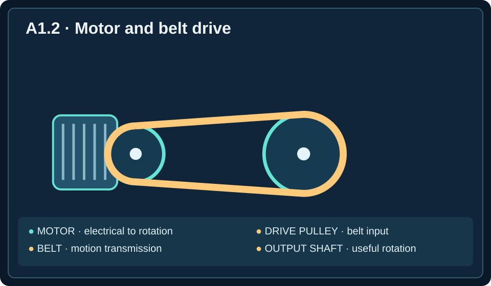

Semester Objective A-O1: Explain mechanical engineering roles, ethical obligations, and design considerations.
Unit A1 Essential Question: How do mechanical engineers use scientific knowledge to develop useful, safe, and reliable technology?
Lesson A1.2 Learning Target: Identify system components, inputs, processes, and outputs.
Lesson Objectives: Identify the parts of a mechanical system; trace how energy and motion move through it; distinguish useful outputs from unwanted energy losses; and use observations and measurements to investigate mechanical problems.
Play the complete narration while following along with the reading. Pause, replay, or skip ahead whenever you like.
What Is a Mechanical System?
Imagine stepping onto an escalator at a shopping mall. You do not need to understand its machinery to use it. You simply step onto a moving stair and allow the machine to carry you to another floor. Beneath those moving steps, however, is a carefully designed collection of motors, gears, chains, shafts, bearings, and structural supports. Each component performs a particular function, and the components must work together for the escalator to operate.
This is an example of a mechanical system: a collection of interacting components that work together to accomplish a physical task, often involving forces, motion, or energy transfer. A mechanical system may be as simple as a pair of scissors or as complicated as a modern automobile. What makes these objects systems is not their size or complexity but the way their components interact to produce a result.
Consider a bicycle. Its pedals, crank, chain, sprockets, wheels, and frame all serve different purposes. The pedals receive force from the rider, the crank and chain transmit motion, and the rear wheel helps propel the bicycle forward. No single component can accomplish the entire task independently.
Engineers use systems thinking to understand these relationships. Rather than examining only one part, they consider how the entire machine works, how its parts affect one another, and how a problem in one location might influence the machine's overall performance.
FIGURE 1 · Bicycle drivetrain as a mechanical system
| Rider's legs Apply force | → | Pedals + crank Produce rotation | → | Chain + sprockets Transfer motion | → | Rear wheel Propels bicycle |
Each part performs a function in the larger system. This diagram is built from standard HTML so Canvas can preserve it.
Inputs, Processes, and Outputs
One of the most useful ways to understand a mechanical system is to divide its operation into three stages: input, process, and output.
An input is something supplied to the system that allows it to operate. Inputs may include electrical energy, human effort, fuel, fluid pressure, or mechanical motion. A system may also receive a command, such as pressing a switch, but the command should not be confused with the energy that actually powers the machine.
A process is what happens inside the system to transform or transfer the input. This may involve motors converting electrical energy into rotation, gears changing rotational speed, chains transferring motion, or hydraulic components producing movement.
An output is the result produced by the system. For mechanical engineers, the most important output is often a useful physical effect, such as lifting an object, moving a vehicle, turning a shaft, or pumping water.
FIGURE 2 · Input–process–output model
| INPUT Energy or force | → | PROCESS Convert or transfer | → | OUTPUT Useful result |
For example, an electric garage-door opener receives electrical energy. Its motor and mechanical drive system convert and transfer that energy into movement. The useful output is the garage door moving upward or downward. The wall button initiates the action, but the button press is not the useful mechanical output.
The same model works for many everyday machines:
| Mechanical system | Input | Process | Useful output |
|---|---|---|---|
| Bicycle | Rider's force | Crank, chain, sprockets transmit motion | Rear-wheel rotation propels bicycle |
| Electric blender | Electrical energy | Motor and shaft rotate blades | Ingredients are chopped and mixed |
| Elevator | Electrical energy | Motor and lifting mechanism move car | Elevator changes height |
| Water pump | Mechanical or electrical energy | Impeller transfers energy to water | Water moves through piping |
| Conveyor | Electrical energy | Motor and drive move belt | Packages change location |
Notice that the output is defined by what the machine is supposed to accomplish. A blender may make noise and become warm while operating, but neither noise nor heating is its primary purpose. Those effects must be distinguished from useful output.
The diagram below summarizes the input–process–output explanation: energy or motion enters, components transmit or transform it, a useful output is produced, and some energy is transferred in unwanted forms such as heat or sound.
Figure 1.2 — How Mechanical Systems Work
Input
Energy or motion entering a system
Transmission
Components transfer or change motion
Output
Useful motion, force, or work
Losses
Unwanted heat, sound, or friction

Understanding Mechanical Components and Subsystems
Mechanical systems are often divided into smaller functional groups called subsystems. A subsystem is a group of components that performs a particular part of the overall system's job.
Consider a motorized conveyor in a warehouse. It might include an electrical supply, a motor, a gearbox, a shaft or coupling, rollers, a moving belt, and a supporting frame. Engineers can group these parts by function.
The power source supplies energy. The motor converts electrical energy into mechanical rotation. The power transmission subsystem transfers that rotation to the equipment that needs it. The working mechanism performs the intended physical task, such as moving packages.
FIGURE 3 · Conveyor subsystem chain
| Power source | → | Motor | → | Coupling / gearbox | → | Belt / rollers |
Useful output: packages move along the conveyor. If the coupling fails, the motor may still turn while the belt remains still.
A coupling is a component that connects two rotating parts so that rotation and torque can pass between them. A shaft is a rotating mechanical member used to transmit power or support rotating components. A gearbox contains gears that can change rotational speed, direction, or torque. Torque is the turning effect of a force.
These components are particularly important because a motor can be working perfectly while the rest of the machine fails. If the motor turns but a coupling is broken, rotation may never reach the conveyor rollers. The electrical input is present, and the motor is functioning, but the intended output is missing.
Key engineering principle: A functioning component does not necessarily mean a functioning system.
How Motion and Energy Travel Through a Machine
Mechanical engineers often trace a power path, the route through which energy or mechanical power moves from the source to the working components. Following this path helps them understand both normal operation and failures.
Consider a powered winch used to pull a small boat onto a trailer. Electrical energy enters the motor. The motor produces rotational motion. A gearbox may reduce rotational speed while increasing available torque. A shaft transfers the rotation to a drum. The drum winds a cable, and the cable pulls the boat.
FIGURE 4 · Power path through a winch
| Battery | → | Motor | → | Gearbox | → | Drum | → | Cable |
The useful result is the cable pulling the load, not merely the motor turning.
Now suppose the motor turns but the drum does not rotate. This observation narrows the possible failure locations. The problem is unlikely to be a total loss of electrical supply, because the motor is visibly turning. Instead, the engineer should examine the connection between the motor and drum, including the gearbox, shaft, and coupling.
This type of reasoning is called system troubleshooting: locating the cause of a malfunction by comparing expected system behavior with observed behavior.
A good engineer does not replace every component simply because the machine has stopped working. Instead, the engineer identifies which stage is failing and gathers evidence about the cause.
Useful Outputs and Unwanted Energy Losses
No real machine converts all its input energy into the intended useful output. Some energy is transferred into unwanted heating, sound, or vibration. These effects may be associated with energy losses, meaning that some supplied energy is not available for the machine's intended task.
For example, an electric fan receives electrical energy and uses it to rotate blades that move air. Some energy also becomes heat in the motor and sound from the moving blades. The useful output is airflow, not motor warmth or noise.
The same distinction applies to a water pump. Its useful output is moving water. Vibrations and sound are generally unwanted effects. For a conveyor, the useful output is the movement of packages, while frictional heating in bearings is not the intended task.
A machine's efficiency describes how much of the supplied energy becomes useful output energy. In simplified form:
Efficiency = (Useful output energy ÷ Input energy) × 100%
Suppose a machine receives 1,000 joules of energy and delivers 800 joules as useful mechanical energy.
Efficiency = (800 ÷ 1,000) × 100% = 80%
The remaining 200 joules have been transferred into other forms, such as heat and sound, or otherwise have not contributed to the intended output. This does not mean the energy disappeared. Energy is conserved, but not all of it remains useful for the machine's purpose.
FIGURE 5 · Example energy balance: 1,000 J supplied
The teal section represents useful energy; the amber section represents energy transferred in other ways, such as heat and sound. Together they account for all 1,000 J.
Engineers study unwanted heating, vibration, and sound because these effects can reduce performance and sometimes indicate developing mechanical problems. A bearing that becomes unusually hot, for instance, may have excessive friction or inadequate lubrication.
However, not every sound or temperature increase indicates failure. Engineers compare observations with normal operating conditions and measured limits before deciding whether a machine needs repair.
Troubleshooting Mechanical Systems Using Evidence
Imagine that a ventilation fan is running, but the room is not receiving enough fresh air. Someone might immediately assume the motor is too small. Another person might suggest increasing the fan speed. Neither suggestion should be accepted without evidence.
The engineer begins by identifying the expected output: adequate airflow through the ventilation system. Next, the engineer measures the actual airflow and compares it with the requirement. If the airflow is too low, the engineer considers possible causes, such as a blocked duct, damaged fan blades, an improperly positioned damper, or a problem with the drive system.
This approach is called evidence-based troubleshooting. It uses observations, measurements, and targeted inspections rather than guesses.
A practical troubleshooting sequence
- Identify the intended output. What should the machine accomplish?
- Observe the actual output. What is happening instead?
- Trace the system. Which components and subsystems produce that output?
- Form a testable explanation. What failure could produce the observed symptoms?
- Inspect and measure safely. Gather evidence that supports or rejects the explanation.
- Correct and verify. Repair the problem and confirm that the system performs as intended.
For example, a conveyor belt may move intermittently even though its motor runs continuously. This suggests the mechanical connection between the motor and belt may be slipping or engaging inconsistently. A trained technician could inspect the drive components under appropriate safety procedures and observe whether the belt's movement matches the motor's rotation.
Safety: Students should not attempt to inspect moving industrial machinery. In professional settings, engineers and technicians follow equipment-specific safety procedures, including isolating hazardous energy before physical inspection.
The key is that troubleshooting is not simply finding a part that looks damaged. It is using evidence to explain why the machine is failing to produce its intended output.
Worked Example: Diagnosing a Failed Lifting System
A factory uses an electrically powered lifting table to raise boxes from the floor to a workbench. The table normally rises 0.8 meters when the operator activates it. One morning, the operator presses the control, the motor can be heard running, but the table remains at its original height.
An engineer needs to determine which part of the system should be investigated first.
Step 1: Identify the input. The system receives electrical energy, and the operator provides a command through the control. Because the motor runs, at least part of the electrical and control system is functioning.
Step 2: Identify the process. The motor and mechanical lifting mechanism are supposed to convert the electrical input into upward movement. Depending on the design, this could involve gears, a screw mechanism, or another mechanical transmission.
Step 3: Identify the intended output. The useful output is the table moving upward by the required distance. Motor noise and an illuminated control panel are not evidence that this output has been achieved.
Step 4: Compare expected and actual results.
| Measurement | Expected | Observed |
|---|---|---|
| Motor operation | Motor runs | Motor runs |
| Table movement | 0.8 m upward | 0 m |
| Intended mechanical output | Load rises | Load remains stationary |
Step 5: Form a reasonable explanation. Because the motor runs but the table does not rise, a fault in the mechanical transmission or lifting mechanism is plausible. However, the evidence does not yet identify one particular failed part. Additional safe inspection and measurement are required.
This is an important distinction. Engineers should draw conclusions that the evidence supports, without pretending that a symptom proves more than it actually does.
Why System Analysis Matters
Mechanical systems appear in transportation, manufacturing, healthcare, agriculture, energy production, and everyday household products. Although these machines may look different, many can be understood using the same reasoning process.
A medical infusion pump, for example, must deliver fluid at a controlled rate. A manufacturing robot must move a tool to the correct position. A vehicle's braking system must slow the wheels safely. In each case, engineers identify the input, trace the internal process, measure the useful output, and investigate what could prevent the system from working properly.
This approach is valuable because mechanical engineers rarely work with isolated components. They design and evaluate entire systems whose reliability depends on the relationships among many parts. Understanding those relationships is one of the foundations of mechanical engineering.
Lesson glossary
Select a term to reveal its definition.
Mechanical system
Interacting components that accomplish a physical task involving forces, motion, or energy transfer.
Systems thinking
Examining how parts of a system interact and influence overall performance.
Input
Energy, force, motion, or another quantity supplied to a system.
Process
The transformation or transfer that occurs inside a system.
Output
The result produced by a system, especially its intended useful physical effect.
Subsystem
A group of components performing one part of a larger system’s function.
Power source
A component or supply that provides energy to a system.
Motor
A device that converts supplied energy into mechanical motion.
Power transmission subsystem
Components that transfer mechanical power or motion between parts of a machine.
Coupling
A component connecting rotating parts to transfer motion and torque.
Shaft
A rotating mechanical member that transfers power or supports rotating components.
Gearbox
An assembly of gears used to change rotational speed, direction, or torque.
Torque
The turning effect of a force.
Power path
The route through which energy or mechanical power travels in a machine.
System troubleshooting
Finding the cause of a malfunction by comparing expected and observed behavior.
Energy losses
Energy transfers that do not contribute to the machine’s intended useful task.
Efficiency
The percentage of input energy delivered as useful output energy.
Evidence-based troubleshooting
Investigating problems using observations, measurements, and targeted tests.
Interactive Activity — Mechanical Systems Diagnostic Lab
Investigate five everyday mechanical systems. Select an answer, receive immediate feedback, and retry as needed. No login or submission is required.
If the activity does not load in Canvas, open the activity in a separate tab.